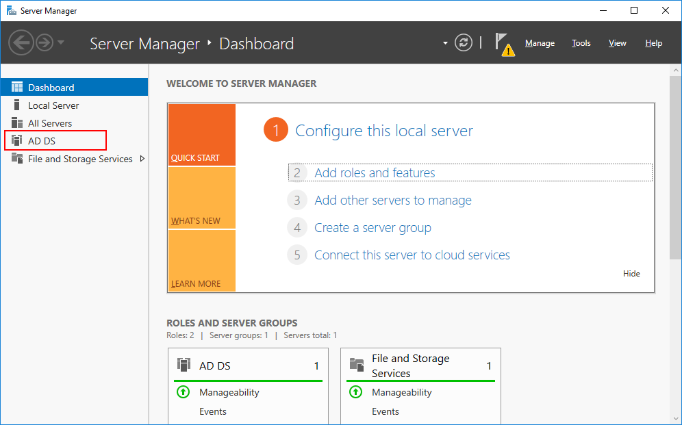
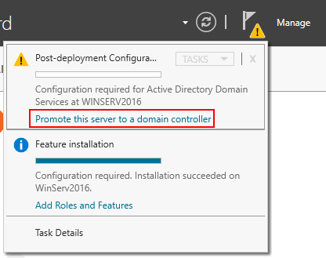
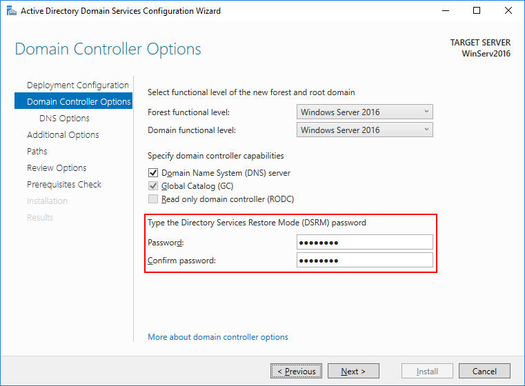
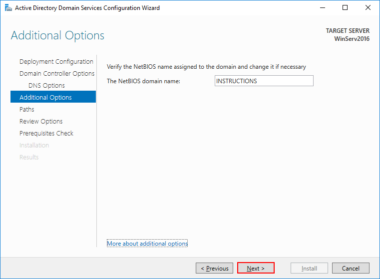
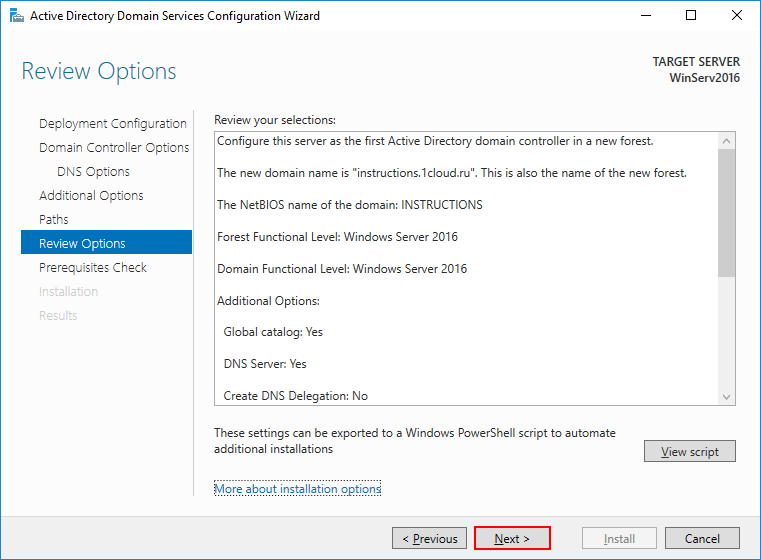

Администрирование сетевых ОС. Служба каталогов
Создание учетных записей
5/10В поиске введите dcpromo и откройте одноименную утилиту

Откройте Диспетчер серверов, в вертикальном меню у вас появится вкладка AD DS
В горизонтальном меню нажмите на восклицательный знак и выберете Promote this server to a domain controller (Повыситьроль этого сервера до уровня контроллера).
В появившемся окне настроек выберите Добавить новый лес (т.к. действия выполняются впервые) и введите ваше доменное имя.

На следующем шаге введите и подтвердите пароль для режима восстановления служб каталогов.
На этом шаге просто нажмите Next.

Укажите удобное имя домена NetBIOS.
Укажите пути до базы данных AD DS, файлов журналов и папки SYSVOL. Рекомендуем оставить значения по умолчанию.

Проверьте настроенные параметры.
Дождитесь проверки предварительных требований после чего нажмите Установить.

После установки сервер будет перезагружен.